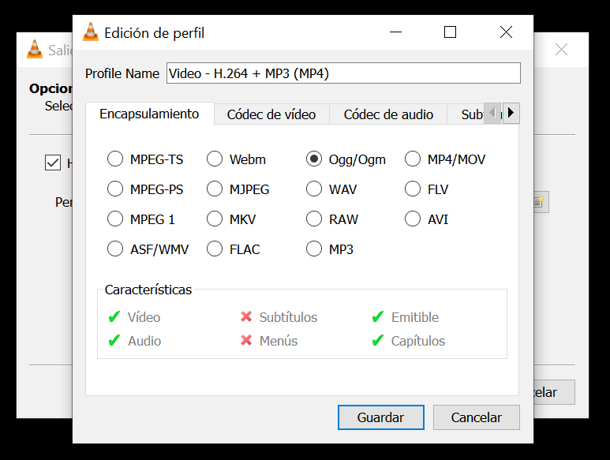
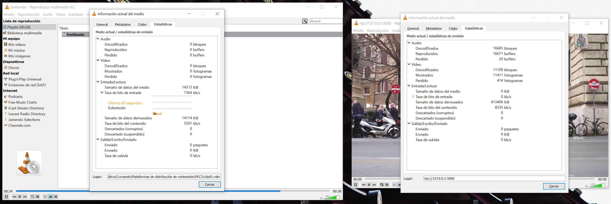
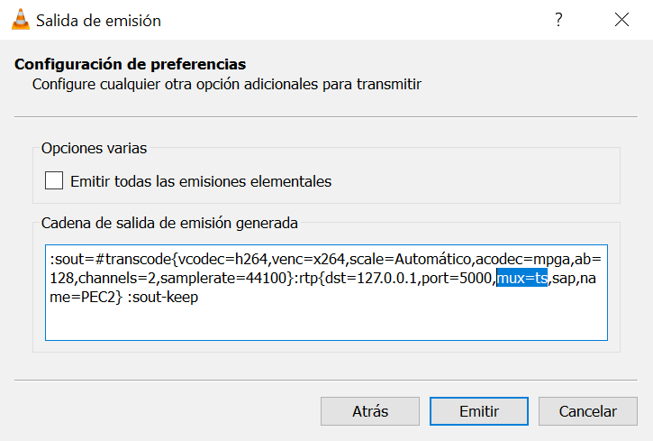

Tarea 2.6
Realiza la práctica seleccionando en el VLC emisor otro contenedor compatible. ¿Se detecta algún cambio en la calidad de la imagen o del sonido respeto el anterior? ¿Por qué?
Si se realiza la práctica con otro contenedor compatible como Ogg/Ogm no se observan cambios respecto a los resultados obtenidos en las tareas previas.
Como se esperaría el cambio de encapsulamiento no afecta a los códecs siempre que estos sean soportados por el contenedor elegido, por tanto, se mantiene el códec H.264 para el flujo de vídeo y MP3 para el flujo de audio.
Lo mismo ocurre con la tasa de bits recibida por el cliente y el factor de compresión. Al igual que en las tareas 2.4 y 2.5 la tasa de bits es de 5.000 kbit/s en el emisor y 7.500 kbit/s en el receptor.
En ambos casos el encapsulamiento y multiplexado de los flujos está siendo realizado mediante MPEG-TS. MPEG-TS es un protocolo que brinda un mecanismo para multiplexar (es decir, combinar en un solo flujo de datos) los flujos de audio, vídeo y datos, para así transmitirlos por una red.
Si se analiza la línea de comandos resultante de configurar el servicio de stream con diferentes configuraciones de contenedor se puede observar como en todos los casos es igual y, además, se indica que RTP haga el multiplexado de los flujos mediante MPEG-TS.
